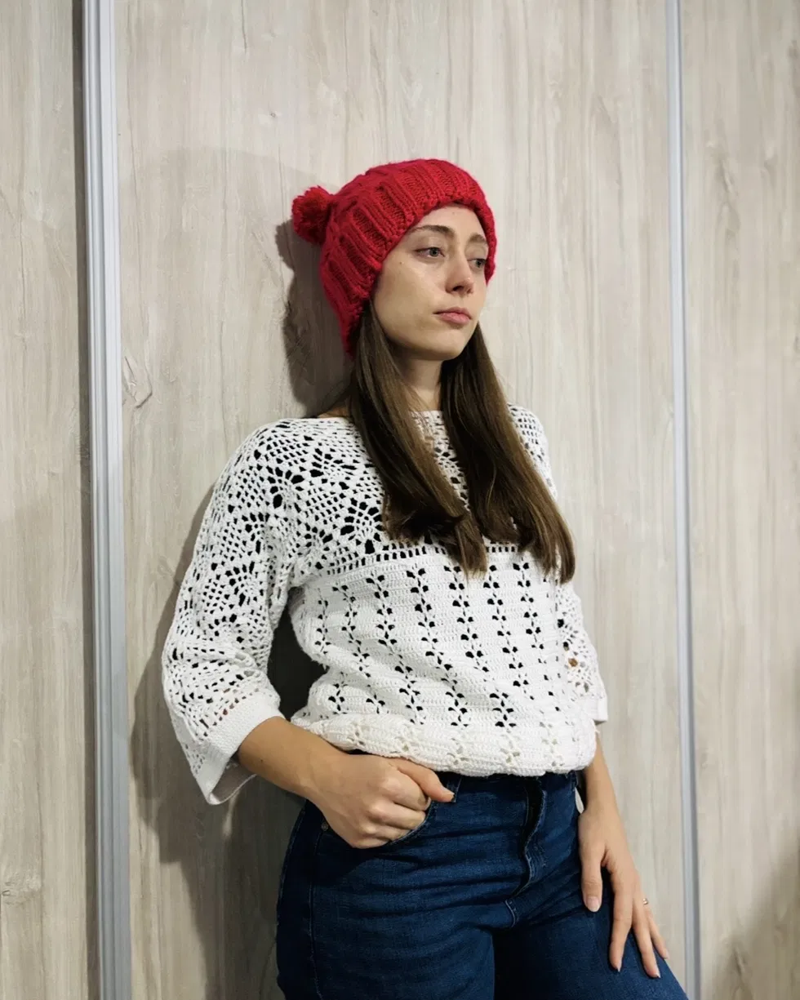
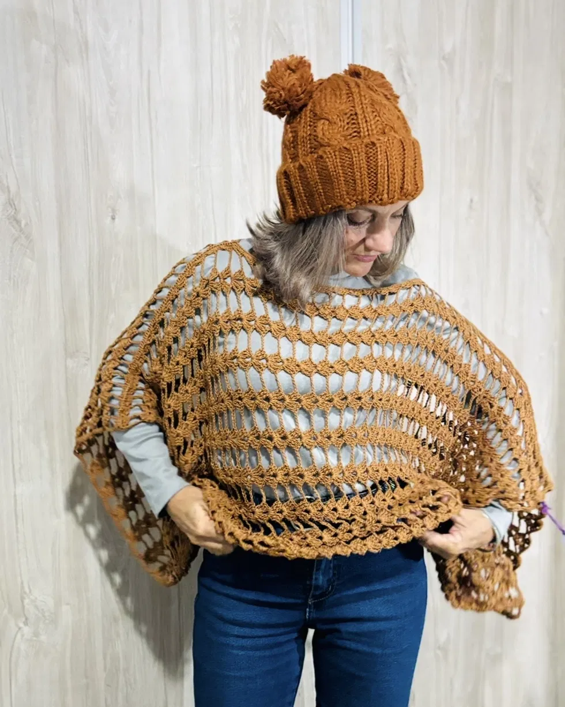
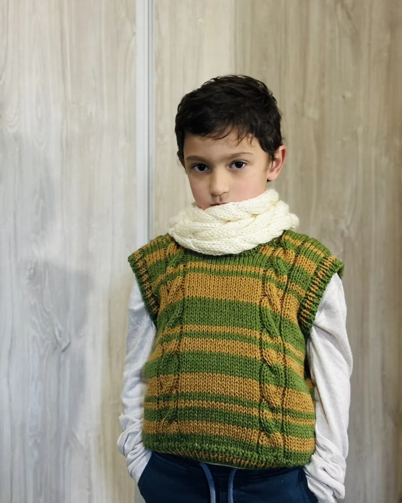
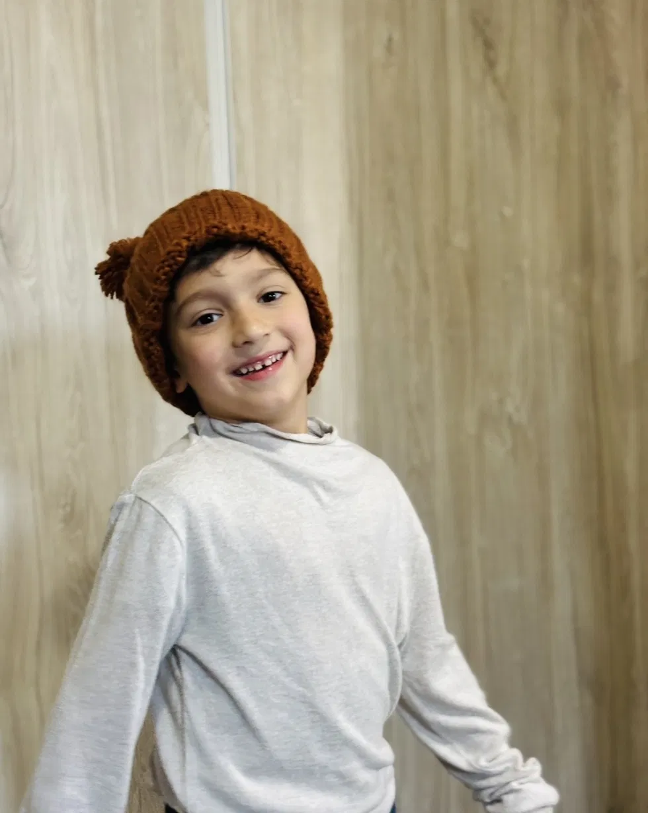
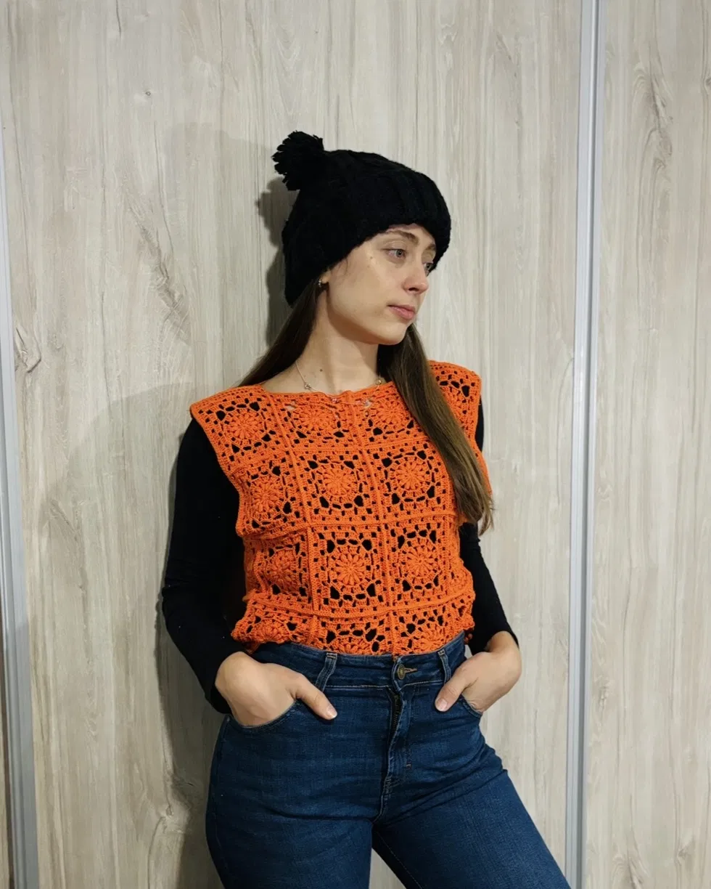
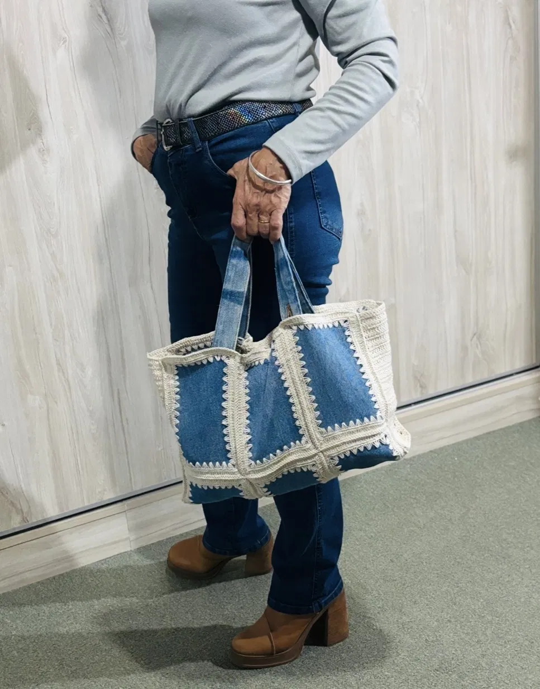

Tejidos con nombre y apellido, hechos a mano en Las Breñas
Ely Creaciones diseña y teje ropa a crochet y dos agujas para cada cuerpo y cada pedido: sweaters, mantitas, ponchos, gorros y más, con lanas elegidas a mano y terminaciones prolijas.
Lo que se teje en Ely Creaciones
Cada prenda se arma a pedido: elegís el modelo, el color y el talle, y Ely la teje especialmente para vos. Estos son algunos de los clásicos.

Sweaters y gorros
Tejidos a crochet con puntos calados y texturados, para todo el año.

Ponchos
Ponchos abiertos y livianos, ideales para las tardes frescas del otoño.

Chalecos y cuellos
Conjuntos tejidos a dos agujas para los más chicos, cálidos y prolijos.

Gorros con pompón
Gorros tejidos a dos agujas, en talles de niño y de adulto, con o sin pompón.

Tops y musculosas
Tejidos livianos a crochet, con motivos geométricos, para el verano.

Carteras y accesorios
Piezas combinadas, como esta cartera de jean con crochet. ¿Tenés una idea? Se puede tejer a medida.
Algunos tejidos ya entregados
Una muestra de piezas reales, tejidas a pedido para clientas y clientes de Las Breñas y la zona.


Ely, de Las Breñas para toda la zona
Ely Creaciones nació de la práctica diaria del crochet y las dos agujas: horas de hilo, puntos contados y prendas pensadas para durar. Cada pieza se hace en Las Breñas, Chaco, y llega a quien la pide en toda la zona, con la dedicación de un trabajo hecho a mano, sin apuro y a medida.
Si buscás algo que no esté en el catálogo, contá tu idea por WhatsApp: muchas prendas nacieron de un pedido puntual.
Cómo hacer tu pedido
Escribí por WhatsApp
Contá qué prenda te interesa, color y talle aproximado.
Definimos el modelo
Ely te muestra opciones de punto, lana y tiempos de entrega.
Se teje a medida
Cada prenda se empieza una vez confirmado el pedido.
Entrega o envío
Retiro en Las Breñas o envío a tu localidad de la zona.
Las Breñas y toda la zona
Ely Creaciones trabaja desde Las Breñas, Chaco, y envía pedidos a las localidades cercanas. Consultá disponibilidad y costo de envío a tu zona por WhatsApp.
¿Le tejemos algo a tu medida?
Contame qué prenda tenés en mente, mostrame una foto de referencia si tenés, y coordinamos modelo, lana y tiempos.
💬 Escribir por WhatsApp